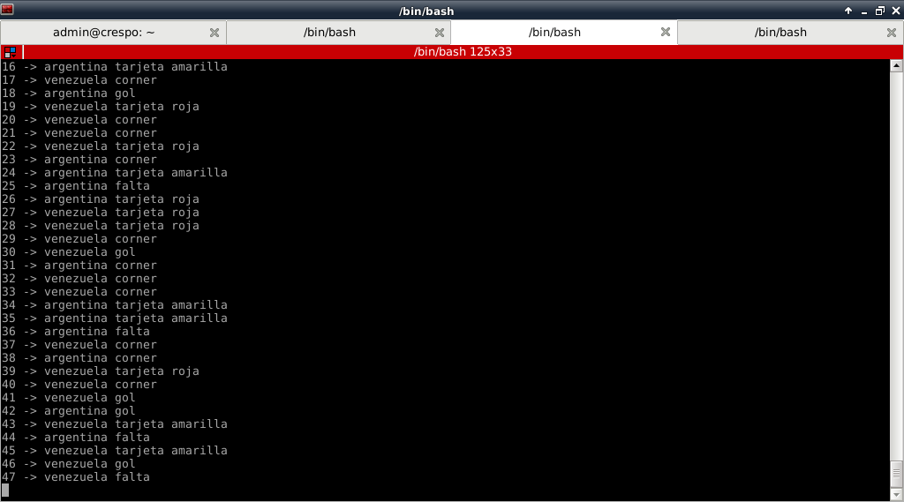

Tutorial de ZeroMQ con Python(PUB/SUB). Parte 4.
Posted on vie 01 junio 2012 in Tutorial Python • 3 min read
Continuando con los tutoriales sobre ZeroMQ ahora se muestra como usar Publicar/Suscribir (Publish/subscribe).
En el patrón pub/sub los componentes son pobremente acompladas, será de gran ayuda para escalar ya que no hay necesidad de preocuparse por los suscriptores. Sin embargo, este acoplamiento puede conducir a un comportamiento inesperado cuando no se entienden completamente.
El ejemplo que se va a desarrollar se basa en la publicación sobre la introducción de ZeroMQ de Nicholas Piël.
El servidor genera una serie de mensaje de países y de eventos por país, la idea es publicar de forma aleatoria un país y un evento. Se creará 2 clientes donde cada uno mostrará la información de 2 países, eso es gracias a PUB/SUB ya que el suscriptor sólo recibe la información que necesita.
A continuación se muestra el código del servidor:
#!/usr/bin/env python
#Se importa ZeroMQ
import zmq
#Se importa choice a partir de random
from random import choice
#Se crea la instancia del contexto
context = zmq.Context()
#Se crea el socket pasandole argumento de publicacion PUB
socket = context.socket(zmq.PUB)
#Se asocia la IP y el puerto que va a escuchar.
socket.bind("tcp://127.0.0.1:5000")
#Se importa sleep
from time import sleep
#Se crea una lista de paises y de eventos
paises = ['holanda','brasil','alemania','portugal','argentina','italia','rusia','venezuela']
eventos = ['tarjeta amarilla','tarjeta roja','gol','corner','falta']
#Se crea un contador con valor inicial 1
c = 1
#Se crea un ciclo indefinido
while True:
#Se define un mensaje pasando de forma aleatoria un pais y un evento
mensaje = choice( paises) + " " + choice(eventos)
#Se muestra en pantalla el valor del contador y el mensaje.
print "->",c , mensaje
#Se envia el mensaje
socket.send(mensaje)
#Se genera un retardo de 1 seg
sleep(1)
#Se incrementa el contador
c += 1
#Si se llega a 180 se termina el ciclo si no continua.
if c == 180:
break
else:
continue
A continuación el código de los 2 clientes(suscriptores): Cliente1:
#!/usr/bin/env python
#Se importa zeroMQ
import zmq
#Se importa sleep a partir de time
from time import sleep
#Se crea la instancia del contexto de zeroMQ
context = zmq.Context()
#Se crea el socket del suscriptor SUB
socket = context.socket(zmq.SUB)
#Se crea la conexion a la IP y puerto del servidor
socket.connect("tcp://127.0.0.1:5000")
#Se define una opcion del socket del suscriptor con argentina y venezuela
socket.setsockopt(zmq.SUBSCRIBE, "argentina")
socket.setsockopt(zmq.SUBSCRIBE, "venezuela")
#Se define el valor inicial de un contador
c = 1
#Se crea un ciclo indefinido
while True:
#Se muestra en pantalla el valor del contador y el mensaje recibido
print c, "->",socket.recv()
#Se genera un retardo de 1 seg en cada ciclo
sleep(1)
#Se incrementa el contador en 1
c += 1
#Si el contador llega a 90 se termina el ciclo, si no continua
if c == 90:
break
else:
continue
Cliente 2:
#!/usr/bin/env python
#Se importa zeroMQ
import zmq
#Se importa sleep a partir de time
from time import sleep
#Se crea la instancia del contexto de zeroMQ
context = zmq.Context()
#Se crea el socket del suscriptor SUB
socket = context.socket(zmq.SUB)
#Se crea la conexion a la IP y puerto del servidor
socket.connect("tcp://127.0.0.1:5000")
#Se define una opcion del socket del suscriptor con brasil y alemania
socket.setsockopt(zmq.SUBSCRIBE, "brasil")
socket.setsockopt(zmq.SUBSCRIBE, "alemania")
#Se define el valor inicial de un contador
c = 1
#Se crea un ciclo indefinido
while True:
#Se muestra en pantalla el valor del contador y el mensaje recibido
print c, "->",socket.recv()
#Se genera un retardo de 1 seg en cada ciclo
sleep(1)
#Se incrementa el contador en 1
c += 1
#Si el contador llega a 90 se termina el ciclo, si no continua
if c == 90:
break
else:
continue
Es como si el servidor estuviera narrando varios juegos de futbol y los clientes sólo muestran la información del partido de futbol que les interesa.
La siguiente figura muestra el resultado del servidor:

A continuación se muestra las 2 fíguras de los clientes: Cliente 1 (Venezuela, Argentina):

Cliente 2(Brasil,Alemania):

Ya se va mostrando cosas más complicadas que se pueden hacer con ZeroMQ, y todavía faltan...
¡Haz tu donativo! Si te gustó el artículo puedes realizar un donativo con Bitcoin (BTC) usando la billetera digital de tu preferencia a la siguiente dirección: 17MtNybhdkA9GV3UNS6BTwPcuhjXoPrSzV
O Escaneando el código QR desde la billetera: